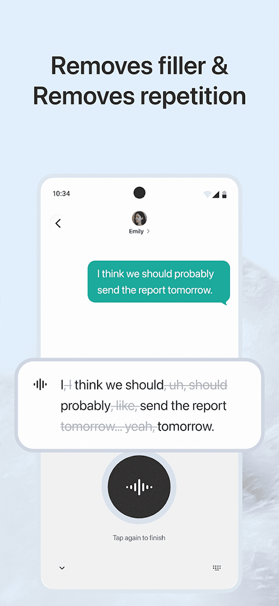
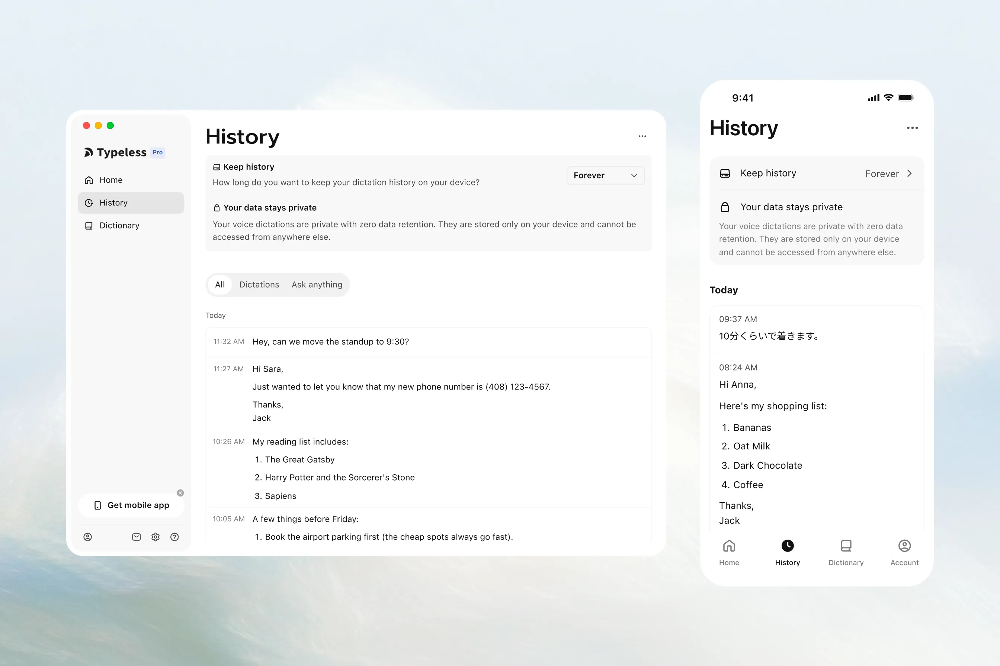

Typeless 迭代史：从"听写工具"到"语音原生输入系统"这一路
观察 Typeless 从第一代只会"转文字"的听写壳子，到现在跨平台、跨应用、能理解语境的语音输入系统，看看团队在迭代里死磕了什么、放弃了什么。
现在打开 Typeless，你可能会觉得它"不就是个语音转文字的 App 吗"。但如果你回头看它刚露面那时候的样子——我最早是在 Android 键盘区刷到 Typeless官网 的，那会儿它连 iOS 都没有，桌面端更是影子都没。它把一次听写的流程，从"对着麦克风说话 → 出一坨带语气词的草稿 → 自己删删改改"，硬生生拉成了一条有理解能力的流水线。
这条流水线是怎么搭起来的？我翻了它几年来的更新记录和文档变化，感觉像在看一个产品团队不断重新定义"语音输入"这件事的边界。
起步：先把"听写"这件事做干净
最早的 Typeless 很克制。它没有什么花哨的功能，就是装一个系统键盘，点麦克风说话，出文字。但哪怕是最基础的听写，它也跟当时市面上的竞品不一样——别的产品在吹"识别率 98%"的时候，它在抠一个没人在意的细节：识别出来的文字，去掉口语垃圾了吗？
说话时天然会蹦出来一堆"嗯、啊、那个、就是说"，还有中途改口的"预算两千……不对，应该是五千"，以及"对对对对对"这种下意识的重复。传统听写把这些原封不动糊成一坨，用户拿到的是一堆自己都不想看的草稿。Typeless 在第一代里就塞进了一层语义理解模型，专门识别和清除这些噪音。
这个设计决策看起来小，但它决定了 Typeless 后来几年的技术走向——它从第一天起就不满足于做一个"语音到文字的管道"，而是要做一个"语音到可用文本"的加工厂。
第一个转折点：自动格式化层的加入
如果说去语气词是"清理垃圾"，那接下来的大版本更新就是"给内容穿上合适的衣服"——自动语气和风格调整。
这一步跨越比我想的要大。去语气词还算是"识别什么该删"的问题，语气风格调整变成了"识别什么该留、留成什么样子"。同样口述一段延期说明，发给同事是口语化的"卡壳在测试环节了"，发给客户是正式的"项目交付预计推迟两个工作日"。Typeless 的 AI 模型开始从两个维度判断场景：你口述本身带的语气词线索，加上你之前在类似场景下的历史输出。
我自己实测过这几个对比场景——同一个意思，成稿的正式度差异确实明显。最有意思的是它允许你在成稿出来之后再用语音编辑微调，说一句"语气更客气一点"，AI 就重新生成一段。这个"语音编辑不是改字，是理解意图后重写"的思路，后来贯穿了它所有的编辑功能。
这一阶段还有一个值得提的小功能：改口覆盖。你说"预算两千……不对，应该是五千"，Typeless 直接把前面的覆盖掉，出"预算 5000"。听起来简单，但背后是模型对"改口信号"的识别——不是所有"不对"都表示改口，有时候"不对，我是说另一个事"又是否定前一句开启新话题。这个功能加进去之后，文档里专门写了一节"不会被误删的内容"，说明他们自己也知道边界在哪。

第二个转折点：跳出键盘，跨应用随心问
到了这个阶段，Typeless 已经能把"说一段话 → 出干净的、合适语气的文字"这条链跑通了。但团队明显不满足——因为"说"只是第一步，说完之后你还要拿这段文字干什么？
这就到了我觉得最能体现他们产品野心的一次迭代：随心问。
随心问的逻辑是：你不用打开 Typeless App，不用切到它的键盘。在任何应用里——Slack、Notion、Chrome、VS Code——选中一段文本，按一个快捷键，直接说你的需求："帮我总结成三句话"、"语气改成正式邮件风格"、"翻译成英文"、"基于这段内容帮我写个开头"。AI 处理完，结果要么落进输入框，要么直接替换选中内容，全程心流不断。
这个功能出来的时候，我第一反应是"这不就是语音版的 ChatGPT 快捷指令吗"。但用多了就发现差别很大——它绑定的是选中的上下文，你说的话里不用再粘贴一次原文，AI 知道你在处理哪段。而且它的覆盖范围太广了，从重写、摘要、解释到延展创作，几乎把"对一段已有的文本能做什么"都包了。
这一步等于把 Typeless 从"输入工具"拉进了"内容处理工具"的领地。输入只是起点，处理才是主战场。
多端补全：Android、iOS、桌面端各有取舍
随着功能一层层往上堆，多端适配也提上了日程。但这里有个很有意思的现象——Typeless 不追求所有端形态统一，而是各端用各自最合适的方式。
Android 版继续走系统键盘路线，因为 Android 系统权限给得够，键盘形态可以在任何应用里直接弹出。iOS 不行，第三方键盘权限受限太多，所以它在 iOS 上走了独立 App + 可选系统键盘的组合，装包从官方下载拿，还专门做了一个画中画模式——把 Typeless 界面拖到屏幕边缘藏起来，在别的 App 里点输入框，回来停听写，文字自动注入。桌面端（macOS）又是另一种玩法，用辅助功能权限实现跨应用的文字操作。
这种"各搞各的"反而让每个端的体验都不别扭。我对比过 iOS 和 Android 的实际使用，画中画在 iOS 上真的挺好用——打字的时候不挡视线，需要听的时候点一下就回来。
迭代节奏里的几个观察
我看了它几年来的更新记录，有几个反复出现的模式挺有意思的。
首先，团队在死磕"理解"，一直在不管"花哨"。你很少在 Typeless 上看到那些竞品喜欢堆的东西——实时字幕、会议记录、多设备同步的花哨界面。它的更新日志里反复出现的是：语气风格模型更新、改口识别优化、随心问指令扩展、语音编辑能力增强。每一个大版本的核心都是"让 AI 更懂你说的话"，而不是"让你能在更多地方用它"。
然后，它不回避错误，但把错误处理做得不打断。去语气词可能删错、语气风格可能判不准、随心问可能理解偏——Typeless 的对策是让你随时可以"重试"，用同一段音频再跑一次；或者直接用语音指令微调，而不是让你回到键盘手动改一堆。去Typeless文档里专门有一节写"被删错了怎么办"，这种直面边界的态度在语音输入产品里不常见。
还有一个细节：历史记录是重要资产。Typeless 的 AI 会学习你在不同场景下的表达习惯，"你每一次对成稿的手动修改都会被它作为反馈信号"——这个设计从早期就有，但最近的版本里把它提到了更核心的位置，甚至出现了专门的词典和历史记录管理页面。

接下来会往哪走
如果说迭代规律有迹可循，那我觉得可以从几个方向推一下。
最确定的一个：理解层会继续加深。现在的语气风格调整还是靠"口述线索 + 历史记录"，未来大概率会加入对目标应用本身的理解——比如你在 Slack 里打开 Typeless，它自动知道这里应该偏口语；你在邮件客户端里用，自动偏正式。随心问的指令集也还在扩充，从目前的重写、摘要、解释，下一步可能会往更复杂的创作辅助走。
第二个方向可能是多模态结合。文档里已经有语音编辑、随心问、历史记录管理等多个入口，但目前还是各自独立的。会不会有一天，你可以用语音说"把上周三我录的那个访谈里关于预算的部分，总结成三句话，用邮件语气发给张三"——一次指令把历史检索、内容处理、场景格式串成一条链？
不太确定的一个：会不会做更多端的原生集成？目前 iOS 走独立 App、Android 走键盘、桌面走辅助功能，这种分治策略挺好，但也意味着跨端的一致性是个长期问题。如果某一端的权限松了或者紧了，整个形态都得跟着调。
以上都是从迭代规律推的，不当官方口径。
写在最后
我觉得 Typeless 这个产品最有意思的地方，是它从来没有试图"让语音代替打字"——那是个伪命题，因为打字在很多场景下比说话快得多。它真正做的，是让"说话"这件事在那些打字不顺的场景里变得好用。比如快速记录想法（说话比打字快）、比如处理大段现有文本（语音指令比复制粘贴方便）、比如在不同应用之间切换时保持心流不断。
这条路线走到今天，它已经不是一个简单的语音转文字工具了。叫它"语音原生输入系统"可能有点重，但至少，它比我当初刷到它时想的要走得远得多。涉及到 Typeless 的文档和更新记录，在GitHub、Gitee、GitCode上都能找到，国内访问哪个顺手就用哪个。